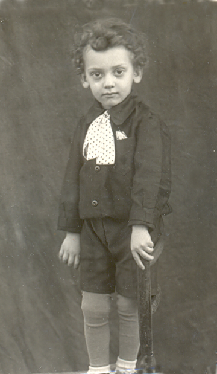
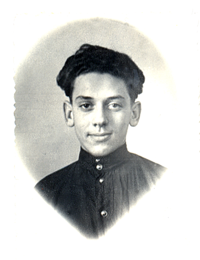
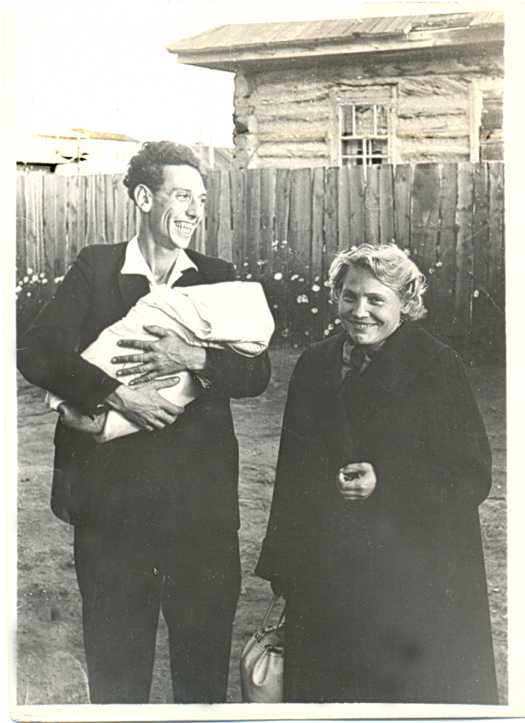
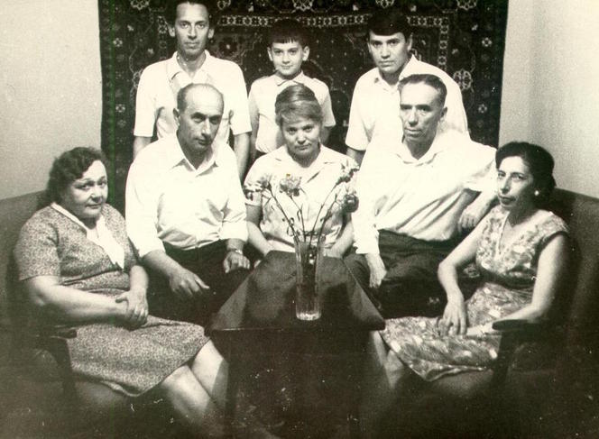

Милые мои Дворжики!
Вот – знакомьтесь: на фото очаровательный ребенок – это Артур Михайлович Басс, младший папин брат, 1936 года рождения.

Он рано осиротел, воспитание его легло на плечи сестры Дины Михайловны. Все свободное от учебы время он проводил у нас, в семье старшего брата.
Артурка был веселый, остроумный, смелый и отчаянный мальчишка. Хорошо помню, как захватывало дух и как весело было с ним кататься на огромных санках с огромной горы в центре города Орска от пожарной вышки к реке Урал. Мне, дошкольнице, казалось – через весь город!
Однажды он угодил в прорубь, проходивший мимо мужчина помог его вытащить, и мы все вместе побежали домой, напуганные произошедшим и тем, что ожидает нас дома. Это было в канун Нового года, празднование которого мы чуть не испортили.
Когда мы жили в Кимперсае и он приезжал к нам на каникулы (я была в 3 классе), он смешил нас с сестрой так, что папа приходил к нам в детскую, чтобы одним своим взглядом утихомирить нас. При этом сам Артурка никогда не смеялся, поэтому все шишки за шум в комнате перед сном доставался нам, особенно мне, хохотушке от природы.
Но был один случай, когда «влетело» Артурке, потому и запомнился. Мы играли в почту и перекидывали корреспонденцию с одной кровати на другую (предполагалось, что мы уже почти спим, поэтому с кроватей не вставали). Получив от Артурки телеграмму с подписью «твой дядя», я в ответной подписалась: «Твоя тетя». Он дико хохотал и никак не мог остановиться, потому что видел мое искреннее недоумение. Я привыкла считать его своим старшим братом (разница в 4 года!), значит, была его сестрой. Конечно, я знала, что он мне дядя, но не предполагала, что ему я – племянница…
Когда мы снова переехали в Орск, Артурка уже учился в техническом училище, а я в 5 и 6 классах. Однажды мне доверили важное дело – найти в училище Артура, чтобы он пришел к нам. Всегда любившая его и очень трепетно к нему относившаяся, я была просто счастлива таким поручением и отнеслась к нему со всей ответственностью. Я долго бродила по многоэтажному зданию и нашла его аж в актовом зале, где шла репетиция хора. Оказывается, он был запевалой, и гордости моей не было предела. Таким он и запомнился мне: высоким, стройным, кудрявым и … ласковым братишкой.

На Лёвиху он приехал к нам уже с женой Герой (Георгиной Ивановной), когда я после окончания школы готовилась поступать в институт. Он был все такой же и очень похож на цыгана: красная рубашка, гитара. Вот с ним я (после длительных уговоров мамы и Геры) и пошла в парк на танцы, и это был мой единственный визит туда, хотя в открытое окно моей комнаты каждый вечер доносилась музыка с танцплощадки…
Это мое последнее воспоминание о нем – жизнь раскидала нас: мы – на Урале, они – в Туве… Даже фотографиями друг друга не баловали. На фото № 3 и 4 Артурка держит своего первенца, названного Анатолием.

Очень дорожу и этой фотографией – единственной, где все три брата и сестра вместе. Папа был уже очень болен…

Стоп! Мы ведь еще встречались все вместе – на похоронах… Но я ничего не запомнила. Начисто!
Семья Артура вместе с детьми и внуками перебралась в Израиль. Там он и похоронен…
Алла Басс (Дворжицкая-Ларина).